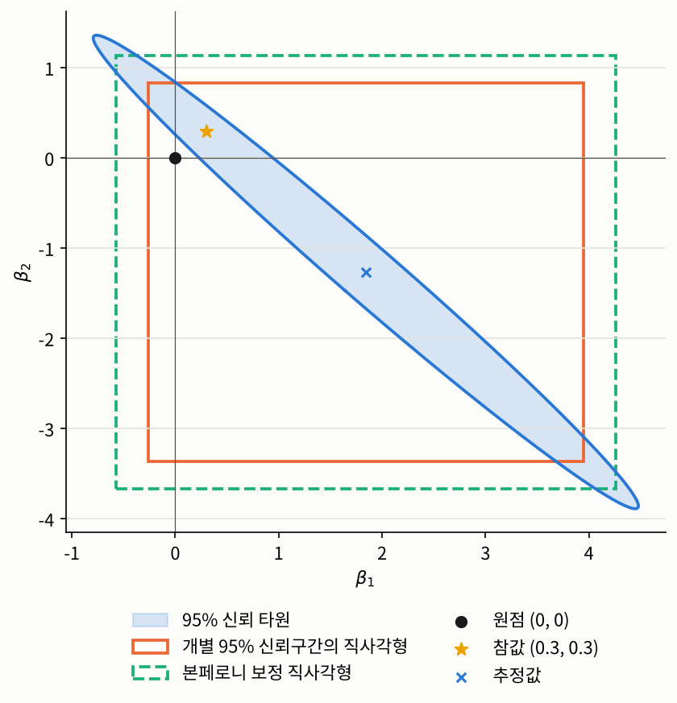

2.3 다중 검정과 신뢰 타원
2장 선형 모델에서의 추론 · 검정을 여러 번 하면 생기는 일
들어가며
2.2에서 여러 계수를 한꺼번에 검정하는 F-검정을 만들었습니다. 그런데 이런 의문이 들 수 있습니다. 위치 더미 두 개가 모두 0인지 알고 싶다면, 그냥 2.1의 t-검정을 두 번 하면 되지 않을까요? 둘 중 하나라도 유의하면 위치가 중요하다고 결론 내리면 될 것 같습니다.
이 방법에는 두 가지 문제가 있습니다. 첫째, 검정을 여러 번 하면 그중 하나쯤은 우연히 유의하게 나올 확률이 커집니다. 둘째, 계수 추정량들은 서로 상관되어 있을 수 있어서, 하나씩 보는 것과 함께 보는 것이 전혀 다른 결론을 줄 수 있습니다. 이번 글에서는 두 문제를 차례로 살펴보겠습니다.
다중 검정 문제
유의수준 5%의 검정은 귀무가설이 참일 때 5%의 확률로 잘못 기각합니다. 검정이 하나라면 감수할 만한 위험이지만, 검정을 20번 하면 이야기가 달라집니다. 평균적으로 \(20 \times 0.05 = 1\)번은 아무 효과가 없는데도 유의하다는 결과가 나옵니다. 신뢰구간도 마찬가지로, 95% 신뢰구간을 20개 만들면 평균적으로 하나는 참값을 놓칩니다. 이것을 다중 검정 문제(multiple testing problem)라고 합니다.
시뮬레이션으로 확인해 보겠습니다. 관측값 100개에 반응과 아무 관계가 없는 공변량 20개를 넣고 선형 모델을 적합한 뒤, 20개 기울기 각각을 5% 유의수준에서 t-검정합니다. 참모형에서는 모든 기울기가 0이므로, 유의하게 나온 기울기는 모두 잘못된 결과입니다.
import numpy as np
from scipy import stats
rng = np.random.default_rng(1557)
n, K, reps = 100, 20, 2000
any_rejected, any_rejected_bonf, n_rejected = 0, 0, []
for r in range(reps):
X = np.column_stack([np.ones(n), rng.normal(size=(n, K))]) # 반응과 아무 관계 없는 공변량 20개
y = rng.normal(size=n) # 참모형: 모든 기울기가 0
XtX_inv = np.linalg.inv(X.T @ X)
beta_hat = XtX_inv @ X.T @ y
resid = y - X @ beta_hat
sigma2_hat = resid @ resid / (n - K - 1)
t = beta_hat[1:] / np.sqrt(sigma2_hat * np.diag(XtX_inv)[1:])
pvals = 2 * stats.t.sf(np.abs(t), df=n - K - 1)
n_rejected.append(np.sum(pvals < 0.05))
any_rejected += np.any(pvals < 0.05)
any_rejected_bonf += np.any(pvals < 0.05 / K) # 본페로니 보정
print(f"한 번의 분석에서 '유의한' 기울기 수의 평균: {np.mean(n_rejected):.3f} (기대값 K * 0.05 = {K * 0.05})")
print(f"하나라도 유의하게 나온 비율: {any_rejected / reps:.3f} (독립이라면 1 - 0.95^20 = {1 - 0.95**K:.3f})")
print(f"본페로니 보정 후 하나라도 유의한 비율: {any_rejected_bonf / reps:.3f}")한 번의 분석에서 '유의한' 기울기 수의 평균: 0.984 (기대값 K * 0.05 = 1.0)
하나라도 유의하게 나온 비율: 0.568 (독립이라면 1 - 0.95^20 = 0.642)
본페로니 보정 후 하나라도 유의한 비율: 0.049분석 한 번에 평균 약 1개의 기울기가 “유의하게” 나오고, 2000번의 분석 가운데 절반이 넘는 57%에서 적어도 하나의 기울기가 유의하게 나왔습니다. 20개의 공변량을 넣고 유의한 것만 골라서 보고하면, 반응과 아무 관계없는 변수를 절반 넘는 확률로 “발견”하게 되는 것입니다.
검정들이 서로 독립이라면 이 비율은 \(1 - 0.95^{20} \approx 0.64\)가 되어야 합니다. 시뮬레이션의 0.57이 그보다 조금 작은 것은, 20개의 t-통계량이 같은 \(\hat\sigma\)를 분모로 나눠 쓰기 때문에 서로 완전히 독립은 아니기 때문입니다. 그래도 5%와는 비교할 수 없이 큰 값입니다.
본페로니 보정
이 문제를 막는 가장 간단한 방법은 검정 하나하나의 유의수준을 낮추는 것입니다. 얼마나 낮추면 될까요? 다음 부등식이 답을 줍니다.
확률론의 기본 성질인 합집합의 확률에 대한 부등식으로, 겹치는 부분을 여러 번 세면 실제 확률보다 커질 수는 있어도 작아질 수는 없다는 뜻입니다. 이제 \(A_j\)를 “\(\beta_j\)에 대한 신뢰구간이 참값을 포함하지 않는 사건”으로 두겠습니다. 그러면 \(\bigcup_j A_j\)는 “적어도 하나의 구간이 참값을 놓치는 사건”이고, 그 여사건은 “모든 구간이 참값을 포함하는 사건”입니다.
위의 시뮬레이션 마지막 줄이 본페로니 보정을 적용한 결과입니다. 기울기 20개를 각각 유의수준 \(0.05/20 = 0.0025\)로 검정하자, 하나라도 잘못 유의하게 나온 비율이 4.9%로 5% 안에 들어왔습니다.
본페로니 보정은 사건들의 관계를 전혀 쓰지 않기 때문에 어떤 경우에도 성립하지만, 그 대가로 보수적(conservative)입니다. 실제 오류 확률이 \(\alpha\)보다 꽤 작을 수 있고, 그만큼 진짜 효과를 놓치기도 쉽습니다. 이를 개선한 방법으로 홀름–본페로니(Holm–Bonferroni) 방법이 있고, “기각한 것들 가운데 잘못 기각한 것의 비율”인 거짓 발견율(false discovery rate)을 통제하는 벤야미니–호흐베르크(Benjamini–Hochberg) 방법도 널리 쓰입니다. 파이썬에서는 statsmodels.stats.multitest.multipletests로 이런 보정을 할 수 있습니다.
실제 선형 모델 분석에서는 다중 검정 문제가 생각보다 덜 주목받는 편입니다. 출력 표의 p-값을 하나하나 읽으면서 보정 없이 해석하는 일이 흔합니다. 그러니 공변량이 많은 모델에서 p-값이 0.03인 계수 하나를 발견했다면, 그것이 여러 번 시도한 끝에 나온 우연일 수 있다는 점을 늘 염두에 두어야 합니다.
신뢰 타원
이제 두 번째 문제로 넘어가겠습니다. 계수 두 개에 대해 “두 참값이 함께 들어 있을 만한 영역”을 만들고 싶다고 해 보겠습니다. 가장 쉬운 방법은 계수마다 신뢰구간을 만들어 두 구간으로 이루어진 직사각형을 쓰는 것입니다. 본페로니 보정을 하면 이 직사각형은 적어도 \(1 - \alpha\)의 확률로 두 참값을 함께 포함합니다.
하지만 더 좋은 방법이 있습니다. 2.1에서 신뢰구간은 기각되지 않는 가설값의 모임이라는 쌍대성을 보았습니다. 같은 생각을 2.2의 F-검정에 적용하면, 여러 계수를 동시에 감싸는 영역이 나옵니다.
부등식의 왼쪽은 \(\mathbf{b}\)에 대한 이차식이므로, 이 영역은 2차원에서는 타원, 더 높은 차원에서는 타원체(ellipsoid)입니다. 그래서 신뢰 타원(confidence ellipse)이라고 부릅니다. 타원의 방향과 길쭉한 정도는 행렬 \(\mathbf{A}(\mathbf{X}^t\mathbf{X})^{-1}\mathbf{A}^t\)의 고유벡터와 고윳값이 정합니다. 계수 추정량끼리 상관이 없으면 축에 나란한 타원이 되고, 상관이 강할수록 비스듬하고 가늘어집니다.
예: 강하게 상관된 두 공변량
신뢰 타원과 직사각형의 차이가 가장 극적으로 드러나는 것은 두 공변량이 강하게 상관되어 있을 때입니다. 가상의 데이터를 만들어 보겠습니다. 관측값 200개에 상관계수가 0.99인 두 공변량 \(x_1, x_2\)를 만들고, 참모형 \(y = 1 + 0.3x_1 + 0.3x_2 + \varepsilon\), \(\varepsilon \sim \mathcal{N}(0, 2^2)\)에서 반응을 만듭니다. 두 공변량 모두 실제로 반응에 영향을 주는 경우입니다.
import numpy as np
import pandas as pd
import statsmodels.formula.api as smf
rng = np.random.default_rng(1557)
n, rho = 200, 0.99
cov = np.array([[1.0, rho], [rho, 1.0]])
x = rng.multivariate_normal([0.0, 0.0], cov, size=n) # 상관계수 0.99인 두 공변량
y = 1.0 + 0.3 * x[:, 0] + 0.3 * x[:, 1] + rng.normal(0, 2.0, size=n)
sim = pd.DataFrame({"y": y, "x1": x[:, 0], "x2": x[:, 1]})
fit = smf.ols("y ~ x1 + x2", data=sim).fit()
print(fit.summary().tables[1])
joint = fit.f_test("x1 = 0, x2 = 0")
print(f"H0: beta1 = beta2 = 0 -> F = {float(joint.fvalue):.3f}, p-값 = {float(joint.pvalue):.4f}")==============================================================================
coef std err t P>|t| [0.025 0.975]
------------------------------------------------------------------------------
Intercept 0.8732 0.153 5.717 0.000 0.572 1.174
x1 1.8429 1.069 1.724 0.086 -0.265 3.950
x2 -1.2637 1.064 -1.188 0.236 -3.362 0.835
==============================================================================
H0: beta1 = beta2 = 0 -> F = 7.060, p-값 = 0.0011얼핏 모순처럼 보이는 결과가 나왔습니다. \(x_1\)과 \(x_2\)의 기울기는 각각 p-값이 0.086, 0.236으로 5% 유의수준에서 둘 다 유의하지 않습니다. 그런데 “두 기울기가 모두 0”이라는 가설은 p-값 0.001로 분명히 기각됩니다. 하나하나는 반응과 관련이 있다고 말할 수 없는데, 함께 보면 적어도 하나는 관련이 있다는 것입니다. 추정값도 이상합니다. 참값은 둘 다 0.3인데 추정값은 1.84와 \(-1.26\)입니다.
신뢰구간과 신뢰 타원을 함께 계산해 보면 무슨 일이 일어나는지 알 수 있습니다.
from scipy import stats
print("개별 95% 신뢰구간:")
print(fit.conf_int(alpha=0.05).loc[["x1", "x2"]].round(3))
print("본페로니 보정 95% 신뢰구간 (각각 97.5%):")
print(fit.conf_int(alpha=0.05 / 2).loc[["x1", "x2"]].round(3))
# 신뢰 타원: (b_hat - b)^t [A (X^t X)^{-1} A^t]^{-1} (b_hat - b) <= a * sigma2_hat * F_{0.95}(a, n - p)
X = fit.model.exog
n, p = X.shape
A = np.array([[0, 1, 0], [0, 0, 1]])
M = np.linalg.inv(A @ np.linalg.inv(X.T @ X) @ A.T)
sigma2_hat = fit.scale # statsmodels가 계산한 sigma^2 추정값
bound = 2 * sigma2_hat * stats.f.ppf(0.95, 2, n - p)
b_hat = fit.params[["x1", "x2"]].to_numpy()
for name, b in [("원점 (0, 0)", np.array([0.0, 0.0])), ("참값 (0.3, 0.3)", np.array([0.3, 0.3]))]:
q = (b_hat - b) @ M @ (b_hat - b)
print(f"{name}: 이차형식 {q:.2f}, 경계 {bound:.2f} -> {'타원 안' if q <= bound else '타원 밖'}")
print(f"두 추정량의 상관계수: {fit.cov_params().loc['x1', 'x2'] / np.sqrt(fit.cov_params().loc['x1', 'x1'] * fit.cov_params().loc['x2', 'x2']):.4f}")
print(f"x1 + x2 계수 합의 추정값: {b_hat.sum():.3f}")개별 95% 신뢰구간:
0 1
x1 -0.265 3.950
x2 -3.362 0.835
본페로니 보정 95% 신뢰구간 (각각 97.5%):
0 1
x1 -0.571 4.257
x2 -3.667 1.140
원점 (0, 0): 이차형식 65.15, 경계 28.07 -> 타원 밖
참값 (0.3, 0.3): 이차형식 9.98, 경계 28.07 -> 타원 안
두 추정량의 상관계수: -0.9880
x1 + x2 계수 합의 추정값: 0.579
그림에서 무슨 일이 일어났는지 보입니다.
- 두 추정량의 상관계수가 \(-0.988\)입니다. 두 공변량이 거의 같이 움직이기 때문에, 데이터는 “\(x_1\)의 효과”와 “\(x_2\)의 효과”를 따로 구분하지 못합니다. \(\beta_1\)을 크게 잡고 \(\beta_2\)를 그만큼 작게 잡아도 예측값이 거의 달라지지 않습니다. 그래서 각 계수의 표준오차가 1 이상으로 크고, 추정값 1.84와 \(-1.26\)은 참값 0.3에서 멀리 떨어져 있습니다.
- 반면 두 효과의 합은 잘 정해집니다. 추정값 \(1.843 - 1.264 = 0.579\)는 참값의 합 0.6에 가깝습니다. 타원이 \(\beta_1 + \beta_2 \approx 0.6\)인 대각선 방향으로만 가늘게 뻗어 있는 것이 이 때문입니다.
- 두 직사각형은 타원을 감싸면서 타원 바깥의 넓은 영역까지 포함합니다. 원점 \((0, 0)\)이 그런 곳입니다. 직사각형으로 보면 원점은 “데이터와 맞는 값”이지만, 타원으로 보면 원점은 데이터와 맞지 않습니다. 원점에서는 두 효과의 합이 0인데, 데이터는 합이 0.6 근처라고 강하게 말하고 있기 때문입니다. 개별 t-검정은 직사각형, 결합 F-검정은 타원의 판단과 같습니다.
이 결과가 이 데이터에서만 우연히 일어난 일은 아닌지, 같은 설정에서 데이터를 2000번 새로 만들어 확인해 보겠습니다.
rng = np.random.default_rng(1557)
reps, count = 2000, 0
for r in range(reps):
x = rng.multivariate_normal([0.0, 0.0], cov, size=n)
y = 1.0 + 0.3 * x[:, 0] + 0.3 * x[:, 1] + rng.normal(0, 2.0, size=n)
f = smf.ols("y ~ x1 + x2", data=pd.DataFrame({"y": y, "x1": x[:, 0], "x2": x[:, 1]})).fit()
individual_ns = (f.pvalues[["x1", "x2"]] > 0.05).all()
joint_sig = float(f.f_test("x1 = 0, x2 = 0").pvalue) < 0.05
count += individual_ns and joint_sig
print(f"개별 검정은 둘 다 유의하지 않은데 결합 검정은 유의한 비율: {count / reps:.3f}")개별 검정은 둘 다 유의하지 않은데 결합 검정은 유의한 비율: 0.871이 설정에서는 열에 아홉 가까이 같은 일이 생깁니다. 공변량끼리 강하게 상관되어 있을 때 계수 하나하나의 t-검정만 보고 “이 변수들은 반응과 관계가 없다”고 결론 내리면 크게 틀릴 수 있다는 뜻입니다. 이 현상은 4장에서 다중공선성(multicollinearity)이라는 이름으로 다시 다룹니다.
정리
이번 글에서는 여러 계수를 동시에 다룰 때의 문제를 살펴보았습니다.
- 검정을 여러 번 하면 우연히 유의한 결과가 나올 확률이 커집니다. 아무 관계없는 공변량 20개를 넣으면 절반 넘는 확률로 적어도 하나가 “유의하게” 나옵니다. 이것이 다중 검정 문제입니다.
- 본페로니 보정은 검정 \(K\)개 각각의 유의수준을 \(\alpha/K\)로 낮추어, 하나라도 잘못 기각할 확률을 \(\alpha\) 이하로 묶습니다. 어떤 경우에도 성립하지만 보수적입니다.
- F-검정과 신뢰영역의 쌍대성으로 여러 계수를 동시에 감싸는 신뢰 타원을 만들 수 있습니다. 타원의 모양은 추정량들의 공분산 구조를 그대로 반영합니다.
- 공변량이 강하게 상관되어 있으면 계수 하나하나는 유의하지 않은데 함께 검정하면 유의할 수 있습니다. 데이터가 각 효과는 구분하지 못해도 효과의 합은 정확하게 알려 주기 때문입니다.
지금까지는 계수에 대한 추론을 다루었습니다. 다음 글에서는 시선을 계수에서 반응으로 돌려, 새 관측값을 예측하고 그 불확실성을 구간으로 나타내 보겠습니다.
연결되는 개념
- \(\leftarrow\) 이전 개념: 2.2 일반 선형 가설과 F-검정
- \(\rightarrow\) 다음 개념: 2.4 예측과 예측구간